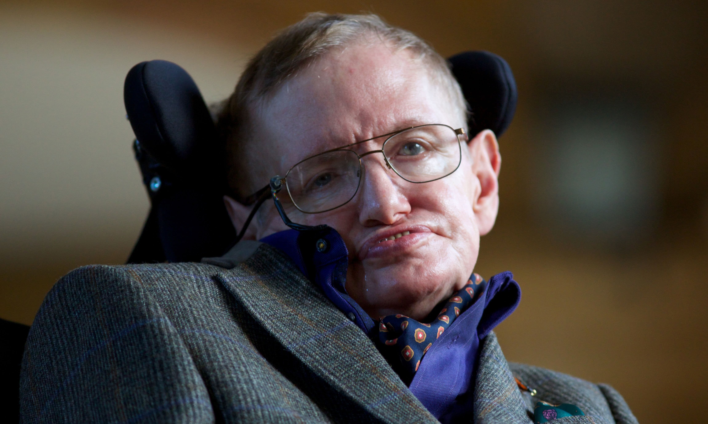
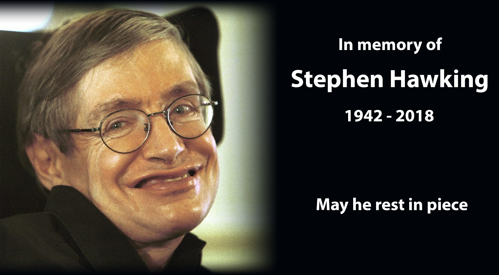

In his later years, Stephen Hawking continued to talk to people about space and science.
He gave talks and appeared on TV to explain complex topics in an easy way.
He also told everyone about the need for science and how to take care of our planet,
and he never stopped sharing his love for science with the world.
Late Life

Public Engagement
Final Years
In his final years, Hawking's battle with ALS reached its most advanced and challenging stage.
By this time, he was almost completely paralyzed and entirely reliant on his speech synthesizer to communicate.
He required around-the-clock care and assistance for even the most basic of tasks.
Despite these profound physical limitations, he continued to engage in scientific work,
collaborating with fellow researchers and coming with even more contributions to his fields.
By this time, he was almost completely paralyzed and entirely reliant on his speech synthesizer to communicate.
He required around-the-clock care and assistance for even the most basic of tasks.
Despite these profound physical limitations, he continued to engage in scientific work,
collaborating with fellow researchers and coming with even more contributions to his fields.
Eventual Death
Stephen Hawking passed away on March 14, 2018, at the age of 76, following complications with ALS.
His death marked the end of an era in the world of theoretical physics and cosmology,
but his contributions and legacy continue to inspire future generations of scientists.

His death marked the end of an era in the world of theoretical physics and cosmology,
but his contributions and legacy continue to inspire future generations of scientists.